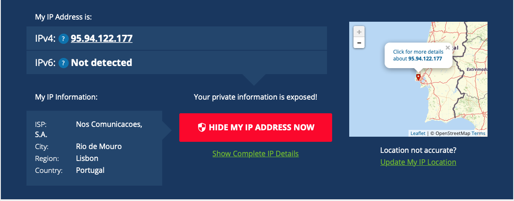

Com base na observação da primeira página da aulas anterior, obti infomação sobre IP do meu PC e do meu telemóvel acessei este link
Obtenha informação sobre o IP do seu PC e seu telemóvel. obtenha e anote o endereço IP do seu computador. Pode obter isso de várias formas. A mais simples é perguntar no Google "what is my ip". Anote onde está localizado, usando por exemplo a ferramenta https://whatismyipaddress.com/ip-lookup. guarde uma imagem do mapa que localiza. Obtenha e anote a mesma informação do seu telemóvel, se tiver dados móveis.
